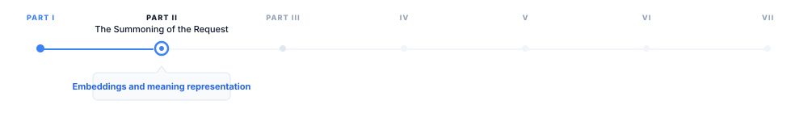
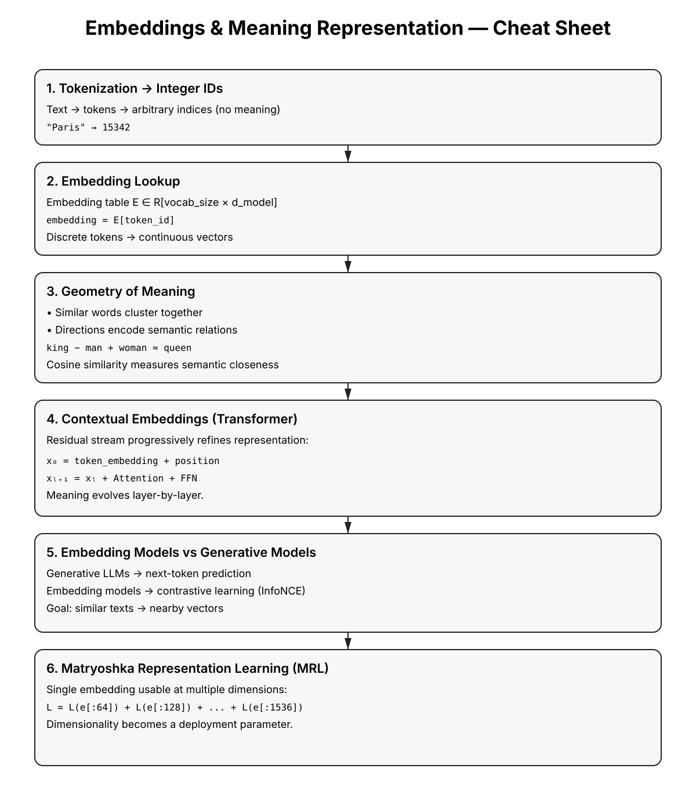

5 Embeddings and Meaning Representation
The canonical question for this chapter: How does a model convert a token ID into something that has meaning, and how does that representation evolve as it passes through the network?

Tokenization converts the prompt text into a sequence of integer IDs. These integers has no meaning a neural network on their own. This chapter covers the step that makes them meaningful and it introduces the geometric structure of meaning that the rest of the model operates on.
5.1 The problem with integers
A token ID is an arbitrary index. The token ID for "Paris" might be 15342 while the token ID for "London" is 9562. These numbers do not carry any information about the relationship between the two cities. They are just indices in a lookup table, nothing more.
An embedding is the thing that you get after that lookup: a dense vector of floating point numbers with hundreds or thousands of dimensions. The embedding for "Paris" might be something like [0.23, -0.87, 0.12, ...] with 4096 values and the embedding for "London" is a completely different vector nevertheless in a well-trained model, it will be close to Paris’s vector in this high-dimensional space, because the two tokens appear in similar contexts throughout the training corpus.
This is the core insight: geometric proximity in embedding space convey the semantic relatedness. Tokens that appear in similar contexts have similar embeddings. The model does not learn this rule explicitly it caused by gradient descent on the next-token prediction objective. Training discovers that representing semantically related tokens as nearby vectors produces better predictions, and adjusts accordingly over trillions of examples.
Embeddings are the bridge between the discrete world of tokens and the continuous world of neural network computation. Everything the transformer does which includes every attention operation, and every feed-forward pass operates on these continuous vectors and the model never touches the original token IDs again after the embedding lookup.
5.2 The embedding table
The embedding table is a matrix of shape [vocab_size, d_model]. Each row is the learned embedding for one token.
Embedding table (simplified, d_model = 4):
Token ID Token Embedding vector
0 <pad> [ 0.00, 0.00, 0.00, 0.00]
1 <eos> [ 0.12, -0.34, 0.87, 0.23]
2 "the" [-0.45, 0.67, -0.12, 0.89]
3 "Paris" [ 0.91, 0.23, -0.67, 0.45]
4 "London" [ 0.88, 0.19, -0.71, 0.43]
5 "cat" [-0.23, 0.89, 0.34, -0.67]The lookup is a simple indexed memory access: embedding = table[token_id]. Implemented as a matrix multiplication with a one-hot vector in theory; in practice it is O(1) and takes microseconds.
For GPT-3 with vocab_size = 50,257 and d_model = 12,288:
Embedding table size = 50,257 × 12,288 × 2 bytes (BF16)
≈ 1.24 billion parameters
≈ 2.47 GBThis is a significant fraction of total model size and it is also the most memory efficient part of the model relative to its influence: every token the model processes uses exactly one row of this table.
5.2.1 Weight tying
The same embedding table is used twice: once at the input (token IDs → embeddings) and once at the output (final hidden state → logits over vocabulary). This is called weight tying and is standard in most transformer language models.
At the output, the hidden state h of shape [d_model] is multiplied by the transposed embedding table E^T of shape [d_model, vocab_size] to produce logits of shape [vocab_size]:
logits = h @ E^TWeight tying reduces the parameter count by vocab_size × d_model and, more importantly it enforces a geometric consistency: the direction that represents a token at the input is the same direction the model uses to predict that token at the output. This constraint improves training efficiency and generalization and it is one of those architectural decisions that looks obvious in hindsight yet it was not obvious at all beforehand.
5.3 How embeddings are learned
At the start of training, the embedding table is initialized from a small random distribution and it does not carry any semantic information they are just noise.
Through training, gradient descent updates each embedding row whenever its token appears in the training data. The update moves the embedding in the direction that reduces prediction loss. Over millions of update steps on millions of tokens, the embeddings converge to representations that capture the statistical structure of language.
The mechanism works by giving tokens that appear in similar contexts, similar gradient updates. If "Paris" and "London" both appear after "capital of" and before "is beautiful", their embeddings are repeatedly pushed in similar directions. Over enough training, they converge to nearby vectors.
This is the distributional hypothesis, operationalized by gradient descent: you shall know a word by the company it keeps.
5.3.1 The rare token problem
Embedding parameters receive less frequent updates than other model parameters. A token that appears once in a billion token batch updates once while a common token might get updates in every batch. This creates an implicit learning rate inequality: frequent tokens have well trained embeddings but rare tokens may be poorly trained even in large models.
This is one reason why multilingual models struggle with low-resource languages, and why domain specific jargon may get handled poorly even in a large general model due to this simple fact that the embeddings for rare tokens have not seen enough gradient signal to settle into a useful position.
5.4 The geometry of embedding space
Trained embeddings organize into a rich geometric structure. Understanding this structure is practically useful for interpreting the model behavior and for building a retrieval system.
5.4.1 Semantic neighborhoods
Semantically related tokens cluster together. In embedding space, countries cluster near each other, verbs in the same semantic field cluster together, synonyms are close, and antonyms are often directionally opposite. This is not an artifact of any particular architecture it emerges from the distributional statistics of the language and it is similar across all model families.
5.4.2 Linear structure
The most famous property of word embeddings is the fact that analogical relationships correspond to linear operations.
embedding("king") - embedding("man") + embedding("woman") ≈ embedding("queen")
embedding("Paris") - embedding("France") + embedding("Germany") ≈ embedding("Berlin")
embedding("walked") - embedding("walk") + embedding("run") ≈ embedding("ran")Directions in embedding space encode semantic dimensions. The vector from "man" to "woman" is a gender direction. The vector from "France" to "Paris" is a capital of direction. Addition and subtraction of embedding vectors correspond to semantic composition and transformation.
This property approximately exist in static embeddings (Word2Vec, GloVe) and it continues to presist in the token embeddings of large transformers, though it might not be as clean as static embedding. The transformer layers above the embedding table further transform these representations in ways that create richer structure yet it makes it harder to extract clean linear relationships.
5.4.3 Isotropy and representation collapse
Embeddings occupy only a narrow cone of the available space, with most directions unused which makes it one of the failure modes in embedding training which is called anisotropy. When embeddings are anisotropic, cosine similarity between random embeddings is high even for semantically unrelated tokens and causes the embedding based retrieval unreliable.
Modern large models are less prone to this compared older smaller models, yet it remains a concern in fine-tuning models where the embedding distribution can shift significantly during training.
5.5 Contextual vs. static embeddings
The embedding table produces a single fixed vector for each token, regardless of context. The token "bank" gets the same embedding whether the surrounding context is about finance or about rivers.
This is the limitation of static embeddings an the transformer layers above the embedding table are able to solve it. After the initial embedding lookup, each transformer block modifies the token representations through attention and feed-forward operations and when it gets to the final layer, the representation of "bank" in a financial context is completley different from "bank" in a geological context. This happens not because the embedding table has changed, but because the transformer layers incorporated contextual information from surrounding tokens.
These contextual representations are called “contextual embeddings” to distinguish them from static lookup embeddings at the first layer. They are what BERT family models were designed to expose, and what RAG retrieval systems use when they need semantically rich representations.
5.5.1 The residual stream
This is a useful model for understanding how representations evolve through the network:
x_0 = token_embedding + positional_encoding
x_1 = x_0 + Attention_1(LayerNorm(x_0))
x_1 = x_1 + FFN_1(LayerNorm(x_1))
x_2 = x_1 + Attention_2(LayerNorm(x_1))
x_2 = x_2 + FFN_2(LayerNorm(x_2))
...
x_L = final hidden state → logitsEach layer adds a refinement to the running representation while the early layers tend to encode syntactic features, middle layers encode semantic relationships and the final layers encode task specific features that is used for prediction.
The residual structure means the original token embedding is always present in the stream and it gets added to every layer and never replaced. This is why the embedding table remains relevant even in very deep models: its contribution persists all the way through computation, like a base note that harmonics are built on top of.
5.5.2 Which layer to extract from
For tasks that use hidden states as embeddings, such as classification, retrieval, or similarity, a practical question that could arise is which layer should be used?
The last layer contains the most task specific information but it may over optimize for next token prediction at the expense of general semantic content. The second to last layer is a common heuristic that often outperforms the last layer for semantic similarity tasks. An average across all layers captures information at all levels of abstraction can be considered robust yet expensive. Middle layers often encode the richest structural information for syntactic tasks.
For dedicated embedding models (text-embedding-3-large, E5, BGE), this question is moot, these models are specifically trained to produce useful representations at the last layer using contrastive objectives rather than next token prediction. For retrieval tasks these models should be used instead of the generative models.
5.6 Embedding models vs. generation models
Generative models are trained to predict the next token although their internal hidden states can be extracted and used for retrieval, this is not what they are optimized for. On the other hand dedicated embedding models form a separate class. They are trained with different objectives and are designed specifically to produce useful vector representations of text.
5.6.1 Contrastive training
Contrastive training is the dominant training approach for embedding models. The model is trained in a way that semantically similar texts have nearby embeddings and semantically different texts have distant embeddings.
The InfoNCE loss, used by models like E5, GTE, and many others:
\[ \mathcal{L} = -\log \left( \frac{\exp\left(\mathrm{sim}(q, k^+) / \tau\right)} {\sum_i \exp\left(\mathrm{sim}(q, k_i) / \tau\right)} \right) \]
Where \(q\) is the query embedding, \(k^+\) is the positive (semantically similar) embedding, \(k_i\) are all keys including negatives, \(sim\) is cosine similarity, and \(\tau\) is a temperature parameter.
The model learns to pull positive pairs together and push negative pairs apart. Training data consists of (query, positive document) pairs which is derived from naturally occurring sources: question-answer pairs, search query logs, natural language inference datasets.
5.6.2 Hard negatives
The quality of negative examples is critical. Random negatives, which mostly means arbitrary documents from the corpus, are too easy. The model learns to distinguish clearly unrelated texts without developing fine-grained discrimination.
Hard negatives are documents that are topically related but semantically different from the positive:
Query: "What is the capital of France?"
Positive: "Paris is the capital and most populous city of France."
Easy negative: "The mitochondria is the powerhouse of the cell."
Hard negative: "France is a country in Western Europe with Paris as a major city."
(related topic, but does not directly answer the question)Mining hard negatives is itself a retrieval problem. Modern embedding model training pipelines use a previous model version or a BM25 index to find hard negatives and train a better model on those negatives, and iterate.
5.6.3 Asymmetric encoding
Many retrieval tasks are asymmetric which means that the query and the document are different in length, style, and information density. A question is short and underspecified yet the document is long and detailed.
Some embedding models handle this by encoding queries and documents with different instruction prefixes:
Query encoding: embed("Represent this query for retrieval: " + query)
Document encoding: embed("Represent this document for retrieval: " + document)The prefix signals to the model what role the text plays, allowing it to produce better representations for each. Models like E5 and Instructor were designed around this approach.
5.6.4 Embedding model families
| Model | Dimensions | Context | Notes |
|---|---|---|---|
| text-embedding-3-small | 1536 | 8,191 tokens | OpenAI; fast and cheap |
| text-embedding-3-large | 3072 | 8,191 tokens | OpenAI; best quality in family |
| text-embedding-ada-002 | 1536 | 8,191 tokens | OpenAI legacy; widely deployed |
| E5-large-v2 | 1024 | 512 tokens | Open-source; strong performance |
| BGE-large-en-v1.5 | 1024 | 512 tokens | BAAI; strong on MTEB |
| Nomic-embed-text-v1 | 768 | 8,192 tokens | Open-source; long context |
| voyage-large-2 | 1536 | 16,000 tokens | Voyage AI; strong retrieval |
The MTEB (Massive Text Embedding Benchmark) leaderboard is the standard reference for comparing embedding models across retrieval, classification, clustering, and semantic similarity tasks.
5.7 Similarity metrics
Embeddings are only useful if you can compare them so the choice of metric matters.
5.7.1 Cosine similarity
The standard metric for text embedding comparison:
cosine_sim(a, b) = (a · b) / (||a|| × ||b||)Cosine similarity measures the angle between two vectors, ignoring magnitude. Values range from -1 (opposite directions) to 1 (identical direction). The appeal for this metric is the invariance to magnitude. A document and its summary should be similar even if the document produces a larger magnitude vector due to greater information density.
For normalized embeddings (unit vectors), cosine similarity equals the dot product: cosine_sim(a, b) = a · b when ||a|| = ||b|| = 1. Most embedding APIs return normalized vectors, making the dot product the efficient choice at scale.
5.7.2 Dot product
Without normalization, the dot product combines angle and magnitude. For some retrieval tasks, magnitude carries useful signal which means a more specific or central document might have higher magnitude and it makes the raw dot product a better metric than cosine similarity.
Modern embedding models and vector databases support both; check the model documentation for which metric the model was trained to optimize.
5.7.3 Euclidean distance (L2)
This is a less common metric for text embeddings andor normalized vectors, L2 distance and cosine similarity are monotonically related:
\[ \|a - b\|_2^2 = 2 - 2\,\cos(a, b) \]
L2 is mostly specific for applications (k-means clustering, certain index structures) where the metric properties are desirable.
5.8 Embedding dimensions and matryoshka representations
The dimensionality of an embedding determines its representational capacity and its cost. While a 3072-dimension embedding can represent finer grained semantic distinctions, it requires 12 KB per vector in float32 and more compute for similarity search. On the other hand a 768-dimension embedding has less capacity but 4× lower storage and faster search. For retrieval over millions to billions of vectors, the difference is significant.
5.8.1 Matryoshka Representation Learning (MRL)
This is a training technique that allows a single model to produce useful embeddings at multiple dimensions from the same forward pass. Instead of training separate models for different embedding sizes, MRL organizes the embedding space in a way that useful representations exist at progressively larger prefixes of the same vector.
MRL trains the model so that the first d dimensions of the full embedding are as useful as a d-dimensional embedding trained from scratch and simultaneously, for multiple values of d:
5.8.1.1 Core Idea
Let the model output a full embedding:
\[ \mathrm{embed} \in \mathbb{R}^{1536} \]
MRL trains the network such that every prefix of the embedding is independently meaningful:
- `embed[:64]` behaves like a strong 64-dim embedding
- `embed[:128]` behaves like a strong 128-dim embedding
- `embed[:256]` behaves like a strong 256-dim embedding
- ...
- `embed[:1536]` remains the highest-quality representationThis is analogous to Russian matryoshka dolls, where smaller representations are nested inside larger ones.
5.8.1.2 Training Objective
During training, the same embedding is evaluated at multiple truncation levels:
L = L(embed[:64]) + L(embed[:128]) + L(embed[:256]) + L(embed[:512]) + L(embed[:1536])Each term computes the task loss (e.g., contrastive similarity loss) using only the first d dimensions.
The result is that you can use the full 1536-dimension embedding for high-accuracy search, or truncate to 256 dimensions for a 6× speedup at a small quality cost, using the same model. Dimensionality becomes a deployment parameter rather than a model choice.
OpenAI’s text-embedding-3 series uses MRL, allowing callers to specify output dimensions at request time.
5.9 Embeddings in the generative inference pipeline
Within a generative LLM’s inference pipeline, embeddings participate at two specific points.
5.9.1 Input: the embedding lookup
After tokenization, token IDs are converted to embeddings via the table lookup. Positional encodings are added (either as additive vectors or via RoPE modifications to attention), and result enters the first transformer block. This step is computationally trivial and takes microseconds even for long sequences.
5.9.2 Output: projection back to vocabulary
The final hidden states are projected to logit space via the transposed embedding table. This is a matrix multiplication of shape [seq_len, d_model] @ [d_model, vocab_size] which is the largest matrix multiply in a single forward pass for models with large vocabularies.
For a model with d_model = 4096 and vocab_size = 128,000:
Output projection: [seq_len, 4,096] @ [4,096, 128,000]
= seq_len × 524,288,000 multiplicationsFor a sequence of 1,000 tokens, this is over 500 billion operations it is significant enough that some models apply the output projection only to the final token position during generation rather than to all positions.
5.10 Practical embedding operations
5.10.1 Embedding a batch of texts
from openai import OpenAI
client = OpenAI()
texts = [
"The capital of France is Paris.",
"Paris is a city in Europe.",
"The mitochondria is the powerhouse of the cell."
]
response = client.embeddings.create(
input=texts,
model="text-embedding-3-large",
dimensions=1024 # MRL truncation
)
embeddings = [item.embedding for item in response.data]
# embeddings[0] and embeddings[1] will be much closer than embeddings[0] and [2]5.10.2 Computing similarity
import numpy as np
def cosine_similarity(a: list[float], b: list[float]) -> float:
a, b = np.array(a), np.array(b)
return float(np.dot(a, b) / (np.linalg.norm(a) * np.linalg.norm(b)))
sim_01 = cosine_similarity(embeddings[0], embeddings[1])
sim_02 = cosine_similarity(embeddings[0], embeddings[2])
print(f"Paris sentences: {sim_01:.3f}")
print(f"Paris vs mitochondria: {sim_02:.3f}") 5.10.3 Semantic search over a corpus
import numpy as np
corpus = ["doc 1 text...", "doc 2 text...", ...]
corpus_embeddings = np.array([
client.embeddings.create(
input=doc, model="text-embedding-3-large"
).data[0].embedding
for doc in corpus
]) # shape: [n_docs, 1024]
query = "What is the capital of France?"
query_embedding = np.array(
client.embeddings.create(
input=query, model="text-embedding-3-large"
).data[0].embedding
) # shape: [1024]
# Cosine similarity (assuming normalized embeddings from the API)
similarities = corpus_embeddings @ query_embedding # shape: [n_docs]
top_k_indices = np.argsort(similarities)[::-1][:5]
for idx in top_k_indices:
print(f"Score: {similarities[idx]:.3f} | {corpus[idx][:80]}")For production retrieval over large corpora, replace the numpy dot product with a vector database (Pinecone, Weaviate, Qdrant, pgvector) that handles indexing and approximate nearest neighbor search at scale. The vector database is the subject of chapter “REFF”.
5.11 Key takeaways
- An embedding converts a discrete token ID into a continuous vector; geometric proximity in embedding space encodes semantic relatedness, emerging from the distributional statistics of training rather than any explicit rule
- The embedding table is a
[vocab_size, d_model]matrix shared between input lookup and output projection (weight tying), enforcing geometric consistency between how tokens are represented and how they are predicted - Static embeddings give every token a fixed vector regardless of context; contextual embeddings (hidden states at later layers) incorporate surrounding context through attention, the residual stream shows how representations accumulate refinements from syntactic to semantic to task-specific
- Dedicated embedding models are trained with contrastive objectives (InfoNCE loss on positive/negative pairs) rather than next-token prediction, producing representations optimized for similarity search
- Hard negatives, topically related but semantically wrong examples, are essential for training models that make fine-grained distinctions; mining them is itself a retrieval problem
- Cosine similarity is the standard metric for comparing embeddings; always use the metric the model was trained to optimize, using the wrong one degrades retrieval results in ways that are hard to diagnose
- Matryoshka Representation Learning allows a single model to produce useful embeddings at multiple dimensions, making dimensionality a deployment parameter
- The output projection (final hidden state to logits) is the most compute- intensive embedding operation in the generative forward pass; the input lookup is negligible by comparison

5.12 Further reading
- Elhage et al. (2021). A Mathematical Framework for Transformer Circuits.: The residual stream model and how information flows through transformer layers.
- Wang et al. (2022). Text Embeddings by Weakly-Supervised Contrastive Pre-training.: The E5 paper; representative of modern embedding model training with hard negatives.
- Kusupati et al. (2022). Matryoshka Representation Learning.: MRL for flexible-dimension embeddings from a single model.
- Muennighoff et al. (2023). MTEB: Massive Text Embedding Benchmark.: The standard benchmark for comparing embedding models across tasks and domains.
← Previous: 05 — Context windows
Next: 07 — Transformer architecture →